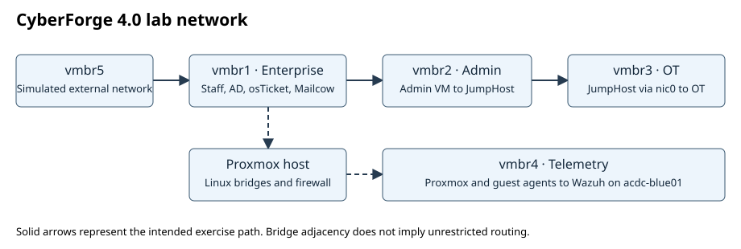

CyberForge 4.0 CTF Simulation
Follow a three-stage red-team exercise and review the corresponding synthetic Wazuh events. The simulation runs locally in your browser.

Blue-team event timeline
Identify the affected host, event sequence and a containment action for each stage.
Project repository and live lab guides